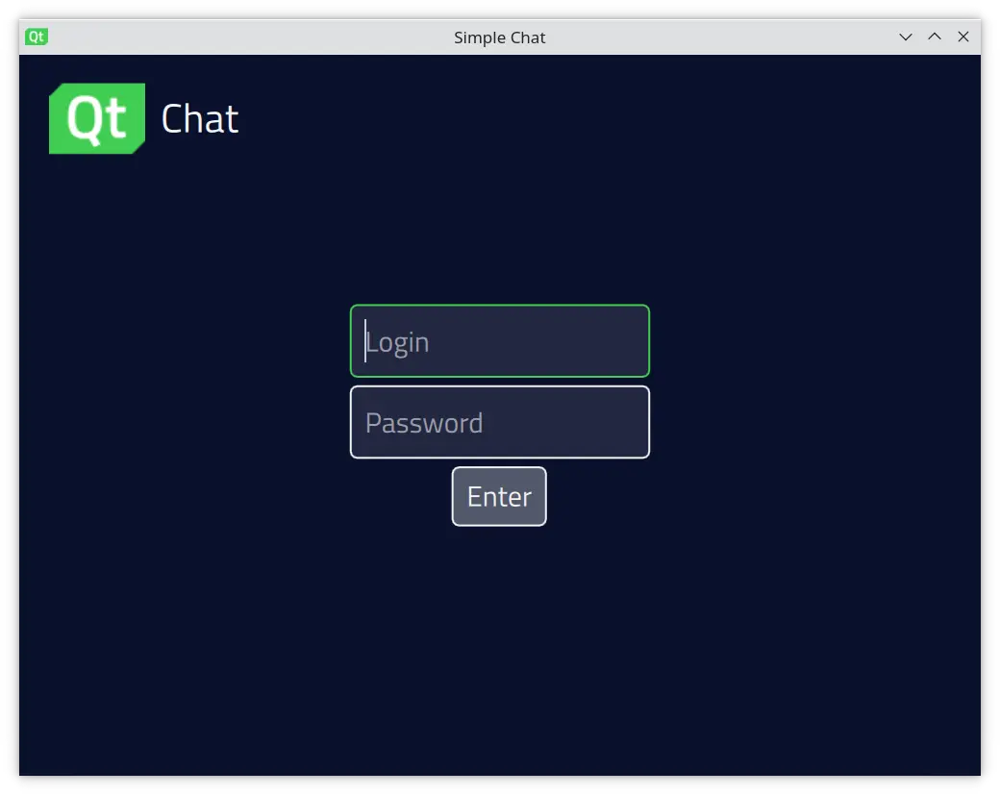
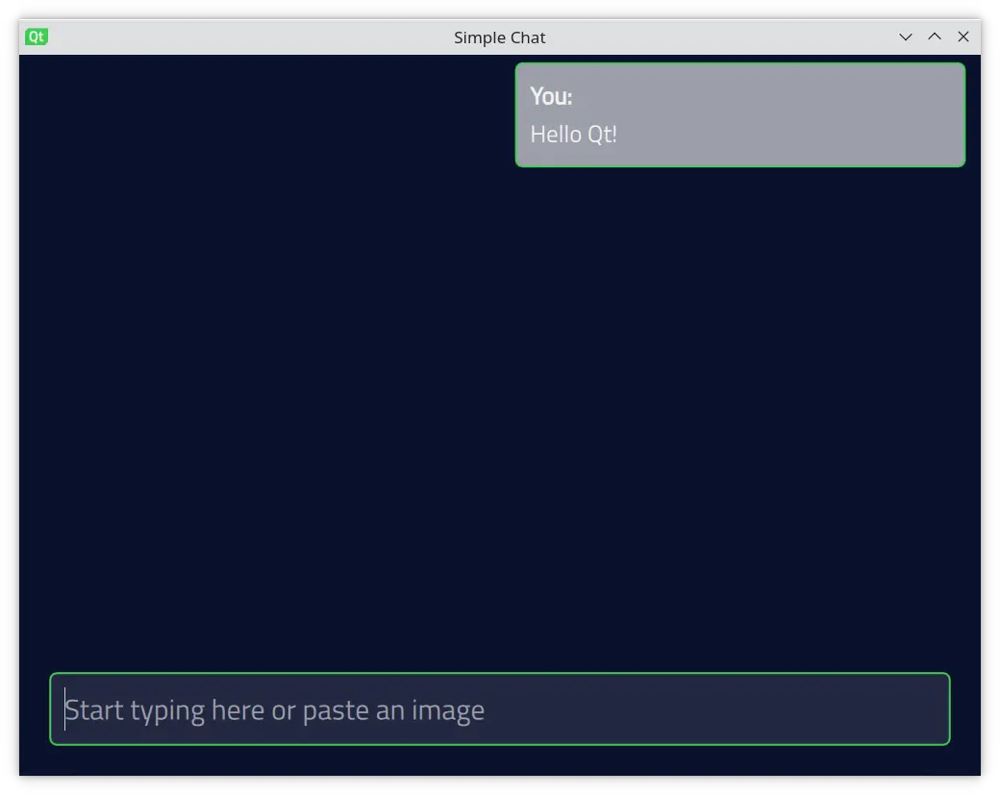

Chat
Using the Qt GRPC client API in the user applications.
Chat explains how to authenticate chat users and send and receive short messages between chat clients. The application supports the following message formats:
- Text - use message input field to send the message.
- Image - copy the image buffer to the clipboard to send the message using the
'Ctrl + V'shortcut.
The chat client uses a simple RPC protocol described in the protobuf scheme:
package qtgrpc.examples.chat;
message ChatMessage {
enum ContentType {
Unknown = 0;
Text = 1;
Image = 2;
};
uint64 timestamp = 1;
bytes content = 2;
ContentType type = 3;
string from = 4;
}
message ChatMessages {
repeated ChatMessage messages = 1;
}
message User {
string name = 1;
string password = 2;
}
message Users {
repeated User users = 1;
}
message None {}
service SimpleChat {
rpc messageList(None) returns (stream ChatMessages) {}
rpc sendMessage(ChatMessage) returns (None) {}
}
On the login screen, enter user credentials:

Note: The list of users is predefined on the server side and is constant. The password for all users is qwerty.
The chat client authenticates to the server using user-name and user-password HTTP headers. These fields are set by the QGrpcMetadata. Each gRPC message includes the user credentials in the message header. QGrpcMetadata is passed to the QGrpcHttp2Channel inside QGrpcChannelOptions once and reused implicitily:
QGrpcChannelOptions channelOptions(url); QGrpcMetadata metadata = { { "user-name", { name.toUtf8() } }, { "user-password", { password.toUtf8() } }, }; channelOptions.withMetadata(metadata); std::shared_ptr<QAbstractGrpcChannel> channel = std::make_shared<QGrpcHttp2Channel>( channelOptions);
The chat client starts the communication with the server using a subscription to gRPC server streaming:
auto stream = m_client->streamMessageList(qtgrpc::examples::chat::None()); QObject::connect(stream.get(), &QGrpcStream::errorOccurred, this, [this, stream](const QGrpcStatus &status) { qCritical() << "Stream error(" << status.code() << "):" << status.message(); if (status.code() == QGrpcStatus::Unauthenticated) { emit authFailed(); } else { emit networkError(status.message()); setState(Disconnected); } }); QObject::connect(stream.get(), &QGrpcStream::finished, this, [this, stream]() { setState(Disconnected); }); QObject::connect( stream.get(), &QGrpcStream::messageReceived, this, [this, name, password, stream]() { if (m_userName != name) { m_userName = name; m_password = password; emit userNameChanged(); } setState(Connected); m_messages.append(stream->read<qtgrpc::examples::chat::ChatMessages>().messages()); });
The QGrpcStream handler provides the signals that the client application should connect to.
The QGrpcStream::errorOccurred signal indicates the error that occurred either on the server side or in the communication channel. Typically, an error results in the connection to the server being closed and the QGrpcStream::finished signal being emitted.
When the server sends new messages to the stream, QGrpcStream emits the QGrpcStream::messageReceived signal. The slot connected to this signal processes the chat message. Messages that are received from the SimpleChat/messageList server stream are collected in the custom QAbstractListModel model and displayed to the user.
When the QGrpcStream::finished signal is emitted, there is nothing more you can do with this stream instance, so you need to initiate a new subscription.
After a successful subscription, the chat client switches to the conversation screen and allows you to see and send short messages:

To send the message, use a unary RPC call SimpleChat/sendMessage. The client application first sets fields of the ChatMessage protobuf message and then calls the client method:
qtgrpc::examples::chat::ChatMessage msg; msg.setContent(content.toUtf8()); msg.setType(qtgrpc::examples::chat::ChatMessage::Text); msg.setTimestamp(QDateTime::currentMSecsSinceEpoch()); msg.setFrom(m_userName); m_client->sendMessage(msg);
Then, the gRPC server processes the client messages and broadcasts them to all the connected clients through the SimpleChat/messageList stream.
Note: This example uses the reference gRPC C++ API in the server implementation.